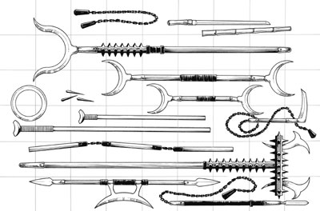
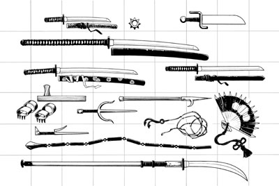

忍者（NINJA SPY）

忍者或许是东方冒险设定集中最神秘，最难以捉摸的职业，虽然一些忍者看上去和刺客差不多（可以直接采用城主指南里的进阶职业刺客），然则真正的忍者应该是使用异种武器、神秘道具，以及奇异的力量“查克拉” （ki)的专家，忍者都是那些神秘忍者家族的成员，家族的首领（上忍……or 火影？！)掌握着绝对的权力，包括决定忍者的生死。每个忍者都得发誓严守秘密，决不暴露自己和其他家族成员的身份。尽管他们有些邪恶倾向，但忍者们都强烈的信仰一种荣誉准则，而一旦违犯了这一准则，他们就将承担冒犯家族所带来的后果（通常是死亡的惩罚）。
大多数忍者都是游荡者，这个职业在技能要求所有想成为忍者的人物都必须具有一定的游荡者职业等级，有些忍者还有施法者背景。在人哦苦干国(Rokugan, 战役设定中的一个国家，角色扮演游戏《五环传奇》的世界,这个译名是linkcd起的，与我无关)，忍者是传奇故事里的人物，有些人甚至拒绝相信他们的存在。忍者在蝎子氏族的Shosuro学校里接受训练，并在整个帝国中高效的发挥作用……
非玩家扮演的忍者通常扮演一股与玩家的行动计划和目的相敌对的神秘力量，一个忍者家族的目的通常是难以捉摸的，但不管怎样，它们极少与玩家扮演的英雄队伍相一致。
生命骰（HD）：d6
职业要求
要具有成为忍者的资格，玩家必须具备以下条件：
阵营：所有非混乱，非善良
技能：欺诈（Bluff）10，易容（Disguise）7，隐藏（Hide） 7，滚翻（Tumble）7
专长：闪避（Dodge）
特殊：反射闪避（Evasion，游荡者2级能力）
职业技能
忍者的职业技能（以及每个技能的关键属性）包括：平衡（DEX），欺诈（CHA），攀爬（STR），交涉（CHA），解除装置（INT），易容（CHA），脱逃（DEX），搜集信息（DEX），躲藏（DEX），暗语沟通（CHA），威吓（CHA），跳跃（STR），聆听（WIS），潜行（DEX），开锁（DEX），偷窃（DEX），察言观色（WIS），侦察（WIS），翻滚（DEX）
职业技能点数：6+智力加值
职业特性
武器和装甲精通：忍者不会获得任何新的武器或装甲专长，不过，他们可以在提升等级时获得某种异种武器的精通。一个忍者如果穿着中型或重型盔甲，他将无法使用以下特殊职业技能：飞檐走壁, 反射闪避，特技，水上飘，瞬间移动
异种武器（Exotic Weapon）：在1级、3级、6级以及9级时，忍者可以获得任意一种异种武器的精通专长，精通的武器必须在以下异种武器中选择：吹箭筒（blowgun）,锁链（chain）,矛链（chijiriki）,吹镖（fukimi-bari），手弩（hand crossbow，PHB），锁镰（kusari-gama）,钉护手（nekode）,忍者刀（ninja-to），手杖刀（shikomi- zue）,梭镖（Shuriken，PHB）,钉链（spiked chain），铁扇（war fan）。
YY大神现在插播：部分异种武器资料
吹箭筒（blowgun）：微型远程武器，1GP，伤害1，重击*2，射程10英尺，2磅，穿刺，耗费飞针（Needles)，每支1GP
锁链（chain）：
这是异种不同与PHB上钉链（Chain, Spiked）的武器，它是一种两头带有重物的锁链，属于双头武器，你可以使用它战斗就象你双手都持有武器那样，并将受到所有和双手持双件武器格斗相关的惩罚，你将会被认为是一手持单手武器，一手持轻武器。
你也可以把它当作长柄武器使用，只能使用一头，攻击距离10英尺，但不像其他长柄武器，你可以攻击近距离的敌人。
因为锁链可以缠绕敌人的腿部或者手臂，所以你可以使用它进行拌摔攻击。如果你在试图拌摔敌人的时候缠到了自己，你可以扔掉锁链而避免被拌摔。
当你使用锁链时，你在尝试解除对方武器时有+2的加值
使用锁链的时候，你可以将你的敏捷修正代替力量修正应用于攻击判定中。
大型武器，5GP，1d4/1d4(原文为1d6,但比照其他武器，我觉得应该是1d4……）,重击*2，5磅，钝击
矛链（chijiriki）：类似锁链，一头是矛一头是重物，攻击方式和拌摔同锁链（chain）
大型武器，8GP，1d6/1d4，重击*2，6磅，钝击/穿刺
吹镖（fukimi-bari）：用嘴发出的飞镖，一次可以发三枚，投伤害时不能加力量调整值
微型远程武器，1GP，伤害1，重击*2，1磅/10枚，穿刺
锁镰（kusari-gama）：一头是重物一头是锄头（至少我觉得是锄头……）
大型武器，10GP，1d6/1d4，重击*2，3磅，钝击/劈砍
钉护手（nekode）：一种用带刺的皮带指成的手套，忍者通常把它当作武器或是攀爬工具，你的敌人不能使用解除武装来解除它，钉护手的攻击都被视为防御攻击，僧侣在使用它时可以使用自己的徒手攻击加值（以及一些其他的特性）
使用一对钉护手攀爬可以获得+2的攀爬环境检定奖励值，这个加值不能和攀爬工具带来的加值叠加。
微型武器，5GP，1d4，重击*2，2磅，穿刺
忍者刀（ninja-to）：一种和武士刀比较像的短而直的剑，忍者指定专用剑！！！忍者刀的刀鞘是一种多用途的工具，它有两个开口，可以当作吹管使用（吹粉末或毒气），它非常坚硬，可以当作梯子的横档-___-b，甚至可以当作武器（像大棒那样用）
小型武器，10GP，1d6，重击19-20/*2，6镑，劈砍
手杖刀（shikomi-zue）：一种用坚硬的竹子或是木头做成的手杖，快速的甩动或是按下按钮可以时一端弹出一个矛头，当刀刃在内部时，它可以造成和铁头长棍（Quarterstaff）一样的伤害（1d6，重击*2），甚至可以当作双头武器使用（就像铁头长棍那样）
大型武器，12GP，1d8,重击*3，5磅，穿刺
铁扇 （war fan)：通过特殊工艺，用金属指成的扇子，尖端有锋利的刺，当它在近距攻击中第一次使用时，使用者可以做一次欺诈检定（对抗对方的察言观色检定），如果对抗成功，他可在这一轮里获得+4的攻击加值。
小型武器，30GP，1d6，重击*3，3镑，劈砍
例图：

Weapons (top to bottom, then left to right): Row 1: chain, shikomi-zue; row 2: sasumata; row 3: lajatang; row 4: chakram, fukimi-bari, korobokuru lajatang; row 5: blowgun, kusari-gama; row 6: greater blowgun; row 7: three-section staff; row 8: sodegarami; row 9: sang kauw; row 10: chijiriki

Weapons (top to bottom, then left to right): Row 1: wakizashi, ratling tail spikes, butterfly sword; row 2: nagamaki; row 3: katana, ninja-to; row 4: tonfa, goad; row 5: nekode, sai,war fan; row 6: jitte, kawanaga; row 7: kau sin ke; row 8: naginata
查克拉闭气术（Ki Breath，Ex）:忍者学习使用“查克拉”来提高自己闭气的能力，忍者可以把他的职业等级加到体质检定中来维持闭气。
使用毒药（Poison Use）：忍者受过使用毒药的训练，可以把毒涂在武器上并保证不会伤害到自己。
飞檐走壁（Slow Fall,Ex)：到达2级后，忍者可以借助墙壁来减慢自己的下落，使下落只造成比实际高度矮20英尺的伤害，这种能力可以减慢下落速度（通过临近的墙壁减少高度带来的影响），到达6级后，忍者可以通过临近的墙壁来减慢下落速度使自己可以从50英尺的高度毫发无损的落下。
高级反射闪避（Improved Evasion,Ex)：从2级起，忍者可以通过超强的敏捷来躲避魔法或非常规攻击，如果忍者通过了反射豁免检定，他可以完全不受任何伤害，甚至即使他没有通过反射豁免，他也只受到一半的伤害，只有当忍者穿着轻甲或是不穿盔甲时他才可以使用这项能力。
偷袭（Sneak Attack,Ex）：当忍者的目标无法有效防御自己，即被偷袭的目标在攻击检定时失去敏捷带来的AC奖励，或是忍者从目标侧面或背后发动攻击时，忍者的攻击都可以产生额外伤害，这种伤害在2级时为1d6,此后每3级增加1d6的伤害，这种伤害可以和其他额外伤害叠加，比如一个7级游荡者/5级忍者可以在偷袭时产生+6d6的额外伤害，其中+4d6来自游荡者等级，+2d6来自忍者等级。
距离在30英尺内，游荡者可以用远程攻击进行偷袭，使用徒手或棍棒攻击时，伤害方式要从普通伤害改为淤伤，在偷袭中，不能用产生普通伤害的武器来产生淤伤。
亡灵生物、结构体、史莱姆、植物和无实体的生物，对重击有免疫能力的生物都不能被突袭。由于忍者必须要完整的观察到目标已找出他的致命部位,所以忍者不能对隐藏的生物或是致命部位没有暴露在外的生物进行偷袭。
特技（Acrobatics,Su）：从3级起，忍者在平衡、攀爬、跳跃和翻滚的技能检定上都可以上获得+10的能力加值，到达7级后，增加为+20，并且，忍者将总是可以在这些技能检定中取10（即使环境不允许）
腾云（Leap of the Clouds,Su）：从3级起，忍者的跳跃距离将不再受身高的限制
遁术（Hide in Plain Sight,Su）：4级的忍者可以在被发现的情况下使用躲藏技能，只要他周围10英尺有阴影，忍者可以在开阔的无障碍物的环境下隐藏，然则，要注意的是，，忍者不能躲在自己的阴影里……
水上漂（Water Walk,Su）：5级的忍者可以使用这项技能在任何液体上行走，忍者必须集中精神来使用这项能力（相当于一个标准动作），所以这时忍者只能做移动或其他类移动动作。这项能力的效果可以持续1轮/忍者等级
千面术（Thousand Faces,Su）：到达7级后，忍者获得了随意改变自己外表的能力，就像使用变身术（Alter Self）一样
毒性免疫（Poison Immunity,Su）：8级后，忍者对所有毒免疫
镜心术（Slippery Mind,Ex）：9级后，忍者可以随意扭曲那些企图控制或胁迫他的法术，如果忍者受到了这些法术的影响时，如果豁免检定失败，他可以尝试再进行一次豁免检定，不过只有一次额外的机会
（这个能力有点莫名其妙……和忍者有什么关系……有点像天运法师……）
瞬间移动（Abundant Step,Sp）：10级的忍者可以在两个位置之间瞬间移动，如同使用任意门法术（Dimension Door），每天可使用一次，效果相当于5级施法者
职业 基本命 Fort/Ref/Will 特殊能力
等级 中加值
1st +0 +0/+2/+0 五行遁法，烟遁1次/天
2nd +1 +0/+3/+0 影缝，改善回避
3rd +2 +1/+3/+1 缩地1次/天，烟遁2次/天
4th +3 +1/+4/+1 残影一级
5th +3 +1/+4/+1 影缝加强，偷袭1D6，烟遁3次/天
6th +4 +2/+5/+2 替身，缩地2次/天
7th +5 +2/+5/+2 残影二级，偷袭2D6，烟遁4次/天
8th +6 +2/+6/+2 影舞
9th +6 +3/+6/+3 缩地3次/天，偷袭3D6，烟遁5次/天
10th +7 +3/+7/+3 影分身，残影三级